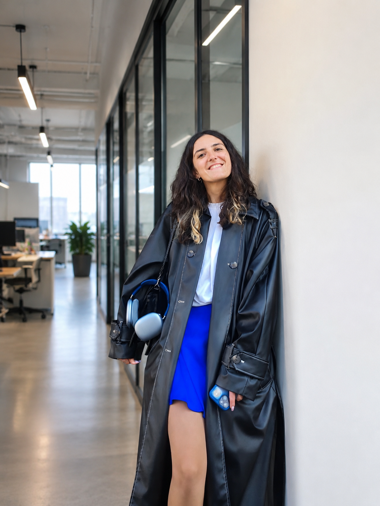

Привет!
Я Моника.
Я занимаюсь дизайном и разработкой интерактивных курсов, лонгридов и сложных образовательных систем. Сочетаю глубокую методологию обучения с чистым UI/UX дизайном и автоматизацией на базе корпоративных LMS.

Дизайн
Проектирование интерфейсов курсов в Figma, создание дизайн-систем, верстка презентаций и чек-листов.
Сборка
Экспертная разработка интерактивных симуляторов в Articulate Storyline. Сборка мобильных и диалоговых тренажеров в iSpring Suite и Tilda.
Методология
Проектирование CJM обучения, написание сценариев (Scenario-Based Learning), разработка систем оценки и карьерных треков.
Курс-сериал «Lead Junior»
Комплексная модульная программа для молодых руководителей со сквозным сюжетом.
Контекст и задача
Разработать программу управленческих навыков. Трудность темы лидерства в том, что в жизни людей сложно поделить на жесткие стереотипы, а готовых универсальных алгоритмов не существует.
Решение и методология
Создана система из лонгридов (теория) и симуляторов (практика). Мы прописали психологически достоверных сквозных персонажей. От модуля к модулю они раскрывались все глубже, поэтому пользователь учился взаимодействовать с ними на основе опыта прошлых серий, как в реальной жизни.
Моя роль
Проектирование программы, написание сценариев, подготовка материалов и финальная техническая сборка интерактивных тренажеров в Articulate.
Интерактивный курс-сказка
Эмоциональный геймифицированный курс по волонтерству на основе разветвленного сторителлинга.
Контекст и сюжет
Главный герой видит объявление о том, что песик ищет дом, и отправляется за ним. По пути он встречает персонажей, нуждающихся в помощи: бабушку с тяжелыми сумками, детей из детского дома на ярмарке. Помогая им, герой (и учащийся) органично узнает о волонтерских фондах и механиках поддержки.
Техническое воплощение
Сложная разветвленная логика переходов в зависимости от выборов пользователя. Я полностью отвечала за сценарий, логику интерактивов, техническую сборку в Articulate и постановку детального ТЗ для дизайнера графики.

Лонгрид «Ситуативное лидерство»
Информационный адаптивный курс, спроектированный и полностью сверстанный в Tilda.
Задача и реализация
Перевести комплексный теоретический блок по ситуационному руководству в удобный цифровой формат. Сделан упор на чистую журнальную верстку, ритмику текста и удобство чтения как с десктопа, так и с мобильных устройств.
Мобильный тренажер сборщика
Интерактивный симулятор процессов сборки заказов в дарксторах, созданный под смартфоны.
Контекст и UX
Обучение линейного персонала дарксторов непосредственно на рабочих местах. Симулятор полностью адаптирован под вертикальные экраны смартфонов.
Автоматизация процессов наставничества в LMS WebSoft
Проектирование архитектуры и внедрение сквозного цифрового трека для автоматического отбора и управления базой наставников компании.
Решение
По моей личной инициативе была спроектирована автоматическая воронка: Входной опрос → Auto-тест хард-скиллов → Назначение обучения → Зачисление в реестр. Процесс администрирования со стороны L&D сократился на 70%.
Проектирование комплексной системы Кадрового Резерва
Глубокая методологическая работа по оцифровке ключевых ролей, созданию инструментов оценки и программ ликвидации дефицитов навыков.
Реализация
Оцифрованы 4 управленческие роли. Разработаны тесты оценки профессиональных навыков сотрудников и спроектированы точечные программы развития (IDP) под конкретные дефициты.